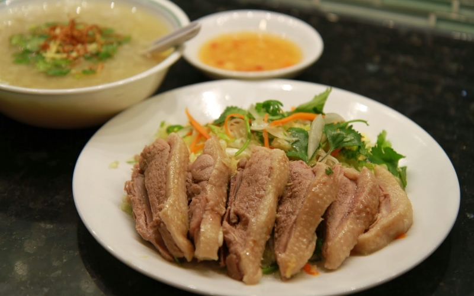

Lam goi vit bap cai hanh tay (Oriental duck salad)

Discription
Duck salad is a dish that many people love because its so simple to make and doesn't take much time
it's easy to eat, it's extremely flavorful
- 2 duck breast
- 1 Onion
- 1/2 a green mango
- 1/4 cucumber
- 2 clove garlic
- 2 birds eye chili
- 20g basil
- 1 tbsp fish scauce
- 1 tsp sugar
- 10g ginger
- sprinkling of msg
Directions
- Boil duck breast with ginger
- Once cooked through drain and slice
- Peel green mango and onion
- Slice mango, onion and cucumber thinly
- Chop garlic, chili until puree
- Combine garlic chili with sugar, msg, and fish scauce and stir well
- Combine all ingredients together in a boal and serve
- Enjoy your meal